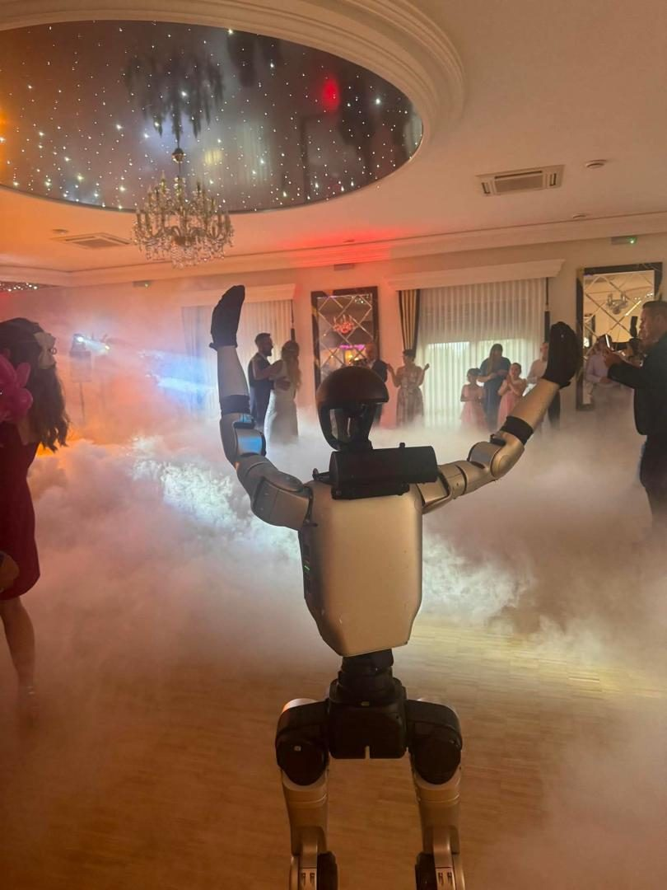

- Pradžia
- Renginių gidas
- Vestuvių vedėjas
Vestuvės · Vedėjas · Kainos 2026
Vestuvių vedėjas: kaina, kaip išsirinkti ir ką paklausti
Vestuvių vedėjas lemia daugiau nei bet kuris kitas tiekėjas: jis valdo vakaro tempą, pristato tradicijas ir nuo jo priklauso, ar svečiai šoks iki ryto. Čia rasite, kiek vedėjas kainuoja Lietuvoje, ką būtina paklausti per pirmąjį susitikimą, kaip atpažinti silpną pasiūlymą ir ką daryti, jei vedėjas neatvyksta.

Ką veikia vestuvių vedėjas
Geras vestuvių vedėjas dirba gerokai anksčiau nei vestuvių dieną. Prieš šventę jis susitinka su jaunaisiais, išsiaiškina, kokių tradicijų norite ir kokių ne, parenka žaidimus pagal svečius, suderina laiką su sale, muzikantais ar DJ, fotografu ir konditeriu. Gerai paruoštas vedėjas atvyksta su vakaro planu, kurį jūs jau esate matę.
Vestuvių dieną vedėjas:
- sutinka jaunuosius — tradiciškai su duona ir druska, ir pakviečia svečius prie stalų;
- valdo laiką: vakarienė, tostai, tortas, pirmasis šokis, puokštės metimas;
- pristato kalbas ir tėvų, liudininkų ar draugų sveikinimus;
- veda žaidimus ir tradicijas — nuo pažinties žaidimų iki vidurnakčio vainiko nuėmimo ir nuometo uždėjimo;
- palaiko nuotaiką, kad šokių aikštelė neištuštėtų, ir sprendžia netikėtumus, kurių svečiai neturi pastebėti.
Vedėjo darbo esmė — ne juokeliai, o tempas. Kai pauzės per ilgos, vakaras subyra; kai žaidimų per daug, svečiai pavargsta. Geriausi vedėjai jaučia salę ir keičia planą jos labui.
Kiek kainuoja vestuvių vedėjas
Vestuvių vedėjų kainos labai skiriasi, nes priklauso nuo patirties, trukmės, datos ir to, kas įeina į paslaugą. Orientacinės kainos pagal viešus 2026 m. spalio skelbimus ir jaunųjų užklausas:
| Paslauga | Orientacinė kaina | Pastabos |
|---|---|---|
| Vedėjas | nuo ~500 € už renginį | Kaina auga su trukme ir patirtimi |
| Vedėjas ir DJ viename, su įranga | nuo ~600 € | Populiaru mažesnėse vestuvėse |
| DJ, 4–7 val. paketas | nuo ~400 €, papildoma valanda ~70 € | Jei vedėją ir DJ renkatės atskirai |
| DJ su gyvu atlikėju | nuo ~600 € | Saksofonas, vokalas ar perkusija |
| Jaunųjų biudžetai užklausose | 500–2 000 € | Dažnai vedėjas kartu su DJ |
Kainą labiausiai kelia data (vasaros šeštadieniai — paklausiausi), trukmė ir viršvalandžiai po vidurnakčio, atstumas iki vietos, įranga ir antroji vestuvių diena. Lyginkite ne sumą, o tai, kas už ją gaunama: kiek valandų, ar įskaičiuota muzika ir įranga, ar vedėjas atvyks į susitikimą prieš vestuves.
Vedėjas ir DJ viename ar atskirai?
Viename — pigiau, vienas kontaktas, vienas atsakingas žmogus. Tinka iki maždaug 60–80 svečių ir vestuvėms, kuriose muzika svarbi, bet ne pagrindinė. Rizika — vienas žmogus vienu metu ir kalba, ir groja, todėl sunkiau suvaldyti ilgą žaidimą ar netikėtumą.
Atskirai — brangiau, bet kiekvienas daro tai, ką moka geriausiai: vedėjas dirba su žmonėmis, DJ — su šokių aikštele. Didelėse vestuvėse ar ten, kur šokiai — vakaro pagrindas, šis variantas beveik visada geresnis.
Kaip išsirinkti vestuvių vedėją
- Žiūrėkite vaizdo įrašus iš tikrų vestuvių, ne tik reklaminį klipą. Svarbu, kaip vedėjas kalba su svečiais, o ne kaip atrodo montaže.
- Susitikite gyvai ar per vaizdo skambutį. Vedėjas visą vakarą bus su jūsų artimaisiais — turite jaustis su juo patogiai.
- Išsiaiškinkite stilių. Vieni vedėjai daug juokauja ir veda daug žaidimų, kiti — elegantiški ir santūrūs. Nė vienas stilius nėra blogas, svarbu, kad tiktų jums ir jūsų svečiams.
- Paprašykite rekomendacijų — jaunųjų kontaktų ar atsiliepimų, kuriuos galite patikrinti.
- Gaukite pasiūlymą raštu su valandomis, kaina, viršvalandžiais ir pakaitinio vedėjo sąlygomis.
15 klausimų vedėjui prieš pasirašant sutartį
- Kiek vestuvių vedėte per pastaruosius metus?
- Ar galite parodyti vaizdo įrašą iš tikrų vestuvių?
- Kaip ruošiatės: kiek kartų susitiksime iki vestuvių?
- Kokius žaidimus siūlote ir ar galime kai kurių atsisakyti?
- Kaip įtraukiate vyresnio amžiaus svečius ir vaikus?
- Kokias tradicijas mokate vesti — nuo jaunųjų sutikimo iki nuometo uždėjimo?
- Kiek valandų įeina į kainą ir kiek kainuoja kiekviena papildoma?
- Ar kaina apima įrangą, mikrofonus ir rekvizitą?
- Kaip skaičiuojamos kelionės išlaidos?
- Ar dirbate su DJ ar muzikantais, kuriuos jau pažįstate?
- Kas nutinka, jei susirgsite? Ar turite pakaitinį vedėją?
- Ar vedate ir antrąją vestuvių dieną?
- Kaip bendraujate su sale, fotografu ir kitais tiekėjais?
- Kokia mokėjimo tvarka ir kokios atšaukimo sąlygos?
- Kokio stiliaus humoras jums artimiausias — ir ko niekada nedarote?
Ką daryti, jei vedėjas neatvyksta
Tokių istorijų pasitaiko, todėl jaunieji apie tai klausia ir paieškoje. Apsisaugoti galima keliais paprastais žingsniais:
- Sutartyje įrašykite įsipareigojimą surasti pakaitinį vedėją, jei sutartasis negalės atvykti.
- Turėkite scenarijų raštu — jį gali perimti DJ, koordinatorius ar draugas.
- Pasidomėkite atsiliepimais ne tik vedėjo puslapyje, bet ir nepriklausomuose šaltiniuose.
- Turėkite dviejų kitų vedėjų kontaktus — paskutinę savaitę tai gali išgelbėti vakarą.
- Likus savaitei dar kartą patvirtinkite atvykimo laiką ir adresą.
Kada verta suklusti
- Vedėjas neturi nė vieno vaizdo įrašo iš tikrų vestuvių.
- Nenori sudaryti sutarties arba kaina „paaiškės vietoje“.
- Primygtinai siūlo savo žaidimus ir nenori jų keisti.
- Neaišku, kiek kainuoja kiekviena valanda po vidurnakčio.
- Į žinutes atsako po kelių dienų — vestuvių dieną bus dar sunkiau susisiekti.
Kaip atrodo vakaras su vedėju
Tipinis vakaras po ceremonijos ir fotosesijos:
| Laikas | Kas vyksta |
|---|---|
| 17:00 | Jaunųjų sutikimas su duona ir druska, svečių susodinimas |
| 17:30–19:00 | Vakarienė, tostai, tėvų ir liudininkų žodis |
| 19:00 | Pirmasis šokis, šokių pradžia |
| 20:00–23:00 | Šokiai, žaidimai, pramogos, fotozona |
| 23:00 | Tortas |
| Vidurnaktis | Vainiko nuėmimas ir nuometo uždėjimas, puokštės metimas |
| Po vidurnakčio | Šokiai iki ryto |
Laikas keičiasi pagal ceremoniją ir šventės vietą, bet seka dažniausiai išlieka panaši. Daugiau idėjų, kaip užpildyti vakarą, rasite gide pramogos vestuvėms.
Vedėjas 2.0: kai vestuvėse — robotas
Jei norite, kad vestuvių vakaras būtų aptariamas metų metus, vedėjo darbą gali papildyti humanoidinis robotas. Jis pasitinka svečius prie įėjimo, kalba lietuviškai, pasako tostą, atidaro šokius choreografija ir visą vakarą tampa fotozona, prie kurios rikiuojasi ir vaikai, ir senelės. Vedėjas tuo metu valdo tempą ir tradicijas — robotas jam nekonkuruoja, o sustiprina ryškiausias akimirkas.
Visa vestuvių diena su robotu ir operatoriumi kainuoja nuo 2 100 € be PVM, trumpesnis pasirodymas įkainojamas individualiai. Plačiau — puslapiuose robotas vestuvėms ir robotas vedėjas.
Dažniausi klausimai
Viešuose skelbimuose vedėjo paslaugos prasideda nuo maždaug 500 € už renginį, o vedėjas kartu su DJ ir įranga — nuo maždaug 600 €. Jaunųjų užklausose matyti biudžetai nuo 500 iki 2 000 € — priklausomai nuo svečių skaičiaus, trukmės, datos ir to, ar į kainą įeina muzika.
Populiariausi vasaros šeštadieniai užsakomi anksčiausiai, todėl vedėjo verta ieškoti iškart, kai žinote datą ir vietą. Rudens, žiemos ar savaitės dienų vestuvėms laisvų vedėjų paprastai būna daugiau.
Tai pigiau ir paprasčiau derinti, todėl populiaru mažesnėse vestuvėse. Didesnėse šventėse dažnai geriau, kai vedėjas ir DJ — atskiri žmonės: kiekvienas gali susikoncentruoti į savo darbą.
Nebūtinai. Daugėja neformalių vestuvių be vedėjo, ypač sodybose. Tada svarbu, kad kas nors iš draugų ar koordinatorius prisiimtų laiką ir pristatytų pagrindines akimirkas.
Iš anksto turėti planą B: sutartyje — įsipareigojimą surasti pakaitinį vedėją, scenarijų raštu, DJ, kuris galėtų perimti pranešimus, ir vieną patikimą žmogų iš svečių, žinantį programą. Taip pat verta turėti dviejų kitų vedėjų kontaktus.
Kai kurie vedėjai siūlo ir antrąją dieną, dažniausiai už papildomą kainą. Tai būtina aptarti iš anksto ir įrašyti į sutartį.
Robotas gali perimti ryškiausias akimirkas — svečių pasitikimą, tostą, šokių pradžią ir vakaro fotozoną. Visam vestuvių vakarui su žaidimais ir tradicijomis geriausiai veikia duetas: vedėjas valdo tempą, o robotas sukuria įspūdį.
Datą, darbo valandas ir viršvalandžių kainą, ką apima paslauga (įranga, muzika, žaidimų rekvizitas), atvykimo išlaidas, pakaitinio vedėjo sąlygas ir mokėjimo tvarką.